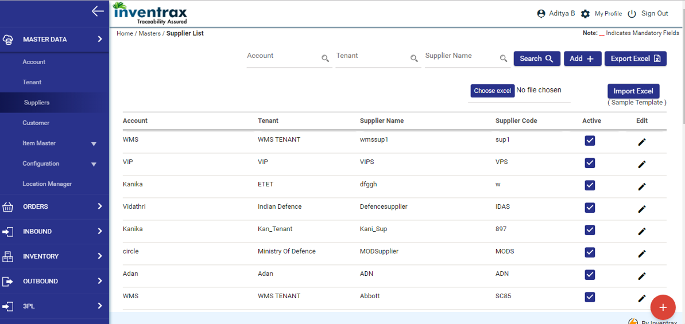
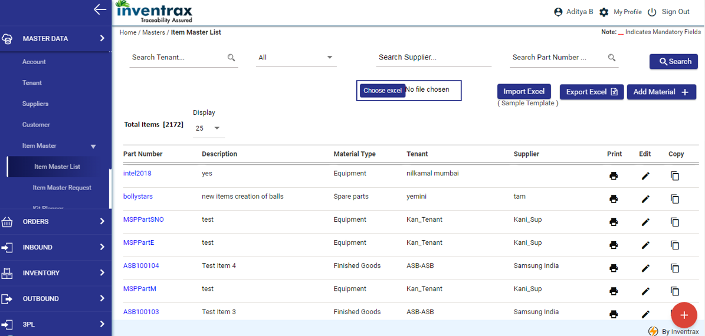

-
Master Data
The master data related features are listed below:
-
Account
- Navigation: Home
 Master Data Account
Master Data Account - Screen: The following screen displays the access to Account Master for Inventrax User / Super Admin:
-
Description
-
Functionality: Functionality of Inventrax User / Super Admin in Account List screen:
- Create a New Account through Add+ button
- Have access to view all the active accounts in Account List page of Merlin application
Search Account will list out all the active accounts in the dropdown and will fetch the search field record based on user selection.
-
Functionality of Inventrax User / Super Admin in Account Form screen:
- New account can be created by providing Account Name, Unique Account Code, Company Name and Company Logo
-
Warehouse Creation:
- After creating an Account, warehouse under that account must be created -
- Warehouse code is unique for an Account which must be of 3 Characters
- Dock Creation – A dock can be created after creating warehouse and Dock No is unique for a warehouse under an account. A dock can be created for Inbound, Outbound or Both. For every dock created, dock locations will be added in the database.
- Zone Creation: Default Docking Zone code will be generated after creating the Warehouse. Zones under a warehouse can be created clicking on Create Zone apart from Dock zone ‘DZ’.
-
Business Rules
- ‘DZ’ Zone code cannot be updated or deleted
- Zone code is unique for a warehouse
- Zone can be deleted only if locations are not present under the Zone otherwise it cannot be deleted
- Locations under a Zone can be added through Add Loc button.
- Account User Creation: Account User will be created for the Account with Account Admin role. Email id is unique for the entire application since it is used for Login. Warehouse should be selected for the Account user.
- Account Admin: Account User which is created by Inventrax User / Super Admin for an Account can be Logged into application and the Company Logo given while Account creation can be seen in the top left.
-
Functionality of Account Admin:
- Account Admin will have access to a specific account.
- Manage warehouses (including docks, zones) and users under the account.
- Account Admin will set the preferences across the account.
- Create Tenant users and warehouse ops users and assign roles to access the application
- Selecting Warehouse is mandate when user type is Account & warehouse Ops
- Selecting tenant is mandate when user type is tenant
-
Functionality: Functionality of Inventrax User / Super Admin in Account List screen:
- Navigation: Home
-
Tenant
- Navigation: Home Master Data Tenant
-
This feature allows the user to view the list of tenants available for the respective account. An account can have multiple tenants mapped to it. It provides Search, Edit, and Update functions based on the user role.
The mandatory fields marked in red must be entered to create a new tenant. Authorized users can create ‘Tenant’. - All the billing information for a particular tenant is given in the billing information grid and all the bills for that tenant will be generated to that address.
- All the contract information for a particular tenant with respect to warehouse is given in the contract information grid and all the details like contract period, agreement files and the warehouse details for that tenant will be mapped.
-
Functionality
- The tenants can be searched with tenant Name
- The ‘Edit’ function in tenant List allows modifying the tenant details with account field disabled (since account is unique)
-
On creation of new tenant following sections will be visible to update the required data
- Billing Information: Allows adding billing information of the tenant.
- Contract Information: Allows adding contract information of the tenant.
Description
Billing Information

Contract Information
- Navigation: Home
-
Supplier
- Navigation: Home Master Data Supplier

- This feature allows the user to view the list of suppliers available in the system and provides Search, Add new supplier, Edit, Update status, Export to Excel and Import excel functions based on the user role.
-
System forwards this request to concerned Dept. (System sends an alert via automated email of this request). A unique supplier code (3 characters) for this supplier will be auto-generated.
Once the supplier is created, system enables the use of this supplier in Item Master Request.
The mandatory fields marked in red asterisk must be entered to create a new supplier request.
Authorized users can create ‘Supplier’ and update the ‘Is Approved’ status / Supplier details
- The suppliers can be searched with Supplier Name, tenant with the tenant name and the accounts with the account name.
- The ‘Edit’ function in Supplier List allows modifying the supplier details with Supplier Code field disabled (since supplier code is unique).
- The entire supplier list that is displayed can be exported as an ‘Excel file’ for reference.
-
On creation of new supplier following sections will be visible to update the required data
- Supplier Details: Allows adding basic information of the supplier.
- Contact Person Details: Allows adding contact person information. Supplier is the one who supplies material to the Tenant. Following are the requirements to create and manage Supplier
-
Business Rules
- Create New Supplier and Manage the Supplier with the Data points provided from the existing system for a given tenant
- Unique Supplier Code should be maintained against each supplier
- System will bulk import Supplier list from and Excel/CSV format provided
- System will seamlessly sync Suppliers details from an Existing System if an Integration is setup. Suppliers list with filters are provided
Description
Functionality
- Navigation: Home
-
Customer
- Navigation: Home Master Data Customer
-
Description
- This feature allows the user to view the list of customers available for the respective account. An account can have multiple customers mapped to tenant. It provides Search, Edit, Update and Export to Excel and Import Excel functions based on the user role.
- Customer is the one who consumes material from the Tenant.
- The mandatory fields marked in red must be entered to create a new customer.
- Authorized users can create ‘customer’.
-
Functionality
- We can request an addition of new customer in the master data, based on the materials they need. User enters details of customer like Account, Tenant, Customer Name, Customer Code as shown in the following screen.
- Navigation: Home
-
Item Master
- Navigation: Home Master Data Item Master

-
Description
- This feature allows the user to view the list of materials available in the system and provides Search, Edit, Copy, Print Label, Add Materials, Export to Excel, Import excel functions based on the user role.
-
Functionality
- The Items can be searched with Material Type / Supplier / Part No.
- The ‘Edit’ function in ‘Item Master List’ allows to modify the item details (part no. is unique)
- The ‘Copy’ function in ‘Item Master List’ allows to create a ‘new item’ (change in Part Number) with source item data
- The entire item master list that is displayed can be exported as an ‘Excel file’ for reference
-
Import Excel
- This feature allows the user to import the materials (materials will be created in bulk) from a default excel template with basic header data (part no., material type, product category, storage condition, item description, BUoM, BUoM/Qty., MUoM, MUoM/Qty.)
- The ‘Print’ function allows to print barcode labels with the provided Part Number and enters required fields Mfg. Date, Exp. Date, Serial No., Batch No., Str. Ref. No., Req. No., Quantity and selects Printer, Label size
-
Description
- This feature allows the user to request a new item to be added into the Item Master, before using the item in any of the system transactions.
- Item detailed data is further segregated into groups such as Basic Material details, Supplier Details, UoM Configuration, Storage Condition details and MSP’s.
- Item should be configured based on Supplier and Tenant.
- The mandatory fields marked in red asterisk must be entered to create a new item request.
- Stock Keeping Unit (SKU) /Part number is a Unique Code to identify items in the Item Master
-
Functionality
- Supplier Details and Tenant Details: Allows to add supplier(s) and Tenant for the material
-
UoM Configuration
- UoM Conversion
-
Allows to configure UoM(s) for the material
- Base UoM will be configured on selection of UoM type and it will always be 1
- Once B.UoM is configured, besides B.UoM, system automatically adds Min. Pick UoM in UoM type list with its UoM, Qty. Per UoM same as B.UoM
- UoM type lists only the pending unconfigured UoM types for this item master
Attachments: - Tech. Datasheets, Eng. Drawings, CoC and other significant documents can be attached for a given supplier without any limitation on the document nos.
On creation of new item following sections will be visible to update the required data
-
Business Rules
- “Default MSP’s will be updated based on default Material Type, MSP configuration” (Ex: For Material Type ‘RM-Raw Material’ ,default MSP’s like Mfg. Date, Serial No., Batch No. will be set)
- If ‘Is Required’ checkbox is enabled then it must be a mandatory field in ‘Goods-IN’
- If decimal inventory is allowed, then Qty. Per UoM of Base. UoM should be greater than the MinPick Qty. Per UoM else MinPick Qty. Per UoM should be greater
- UoM of B.UoM and Alt.UoM cannot be same
- If UoM of B.UoM and MinPick UoM are same then Alt.UoM’s UoM should be different from the former
- If UoM of ‘Alt. UoM’s , MinPick are same’, then ‘Qty. Per UoM of Alt. UoM’s should be multiple of MinPick Qty. per UoM’(other than that qty)
- Once ‘Alt. UoM’s’ are configured, cannot edit ‘B.UoM, MinPick UoM’
- ‘B.UoM, MinPick UoM cannot be deleted’ until ‘Alt. UoM’s are deleted’
- UoM Types configured for an item cannot be modified/deleted, ‘once the Goods Movement(IN/OUT) transaction is done’
- When item code is configured in PO/SO then cannot edit UoM, quantity but can add a new item
MSP’s
UoM’s
-
Business Rules:
- When an account user creates new item then all the tenants under that account should come in Tenant drop down
- When a tenant user creates new item then only tenant user mapped tenant should come in Tenant drop down
- Part number: Part number will be unique based on account and tenant level.
- Edit: Once material is mapped to PO, cannot modify the item details, supplier details, material storage parameter details and UoM details
- Navigation: Home
-
Kit Planner List
- Navigation: Home Master Data Kit Planner List
-
Description
- This feature allows the user to view the list of kit items available and to request a new kit to be added in the kit planner before using the item in any of the system transactions. Kit Planner provides Search, Edit, Add/Edit Kit Items, Export to Excel functions based on the user role.
-
Functionality
- The Items can be searched with a given Part Number.
- The ‘Add New Kit’ function allows to add parent kit (part no., supplier, description, BUoM/Qty.)
- The ‘Edit’ function provided in each of the item allows user to modify the kit details.
-
The ‘Child Kit Items’ function in the Add/Edit Kit Items column allows to add child kit items to the parent (part no., kit UoM/Qty., Qty.)
- The ‘Edit’ function in each of the Kit items allows to modify the kit details. One or more child items with their basic details can be updated to the Parent.
- The entire kit planner list that is displayed can be exported as an ‘Excel file’ for reference.
-
Business Rules
- Only the items with approved and active status, can be configured in kit planner and also will be available in the list.
- On modifying an already configured kit parent, system will remap the child items to the newly entered parent material.
- Item configured in kit planner cannot be child to the same kit but can be a child item for another kit planner item.
- Once kit planner is mapped to PO/SO, then cannot modify the item details, active/delete status.
- Navigation: Home
-
Location Manager
- Navigation: Home Master Data Location Manager
-
Description
- Interactive location management and warehouse zone floor map tool. Enables the warehouse operators to view the complete zone floor map from the last storage unit (locations/bins) to the highest classification (Racks) in its hierarchy in an interactive map. Operators can create, modify, add and delete locations based on the business logic configured. Bulk Locations can also be created. Operators can search and plot locations based on the Item, Tenant.
- The following screen is used to manage the location(s) in a warehouse. User can get the location/Bin by selecting warehouse and Zone (Site code)
-
Functionality
- The following screen displays the locations on selection of warehouse and Zone having Rack, Bay and Location/Bin. (Ex: S101V01).This interactive tool help the user to view the Item and their quantities in a bay by placing the mouse pointer over the bin.
- New Location: System creates new locations i.e., Bulk locations in a ‘Warehouse’ and its corresponding ‘Zone (Site Code)’ using slider selection of Rack, Bay and Location/Bin available as shown in the following figure.
- Location Code Genealogy: For example, consider the created location as ‘WM01A0102’ for which
- Delete: Allows deleting the empty Location(s)/Bin(s) in a Warehouse and its corresponding Zone (Site code)
Modify
- Permits to view and modify the location(s) details in separate pop-up as shown above.
- ‘Allow Mixed Material’ is checked in Green, then Mixed materials are allowed to be placed in that location while goods receipt.
- ‘Allow Mixed Material’ is unchecked, then Fixed materials are allowed to be placed in that location while goods receipt.
- For a location ‘Is Quarantine’ is selected as ‘Yes’, then only the damaged/discrepancy materials are to be received in that location.
- ‘Fast- Moving Location’ is checked in Green, then Fast-moving goods will be placed in that location while Goods receipt ‘Active Location’ is checked in Green, then the location will be blocked and will not be shown on selection of warehouse and Zone Specific Tenant and Supplier under Tenant can be mapped to the selected location in Modify
- Once the Location/Bin details are updated, the system terminates the screen.
Bulk Modify
- Permits to Bulk modify the location(s) details in separate pop-up as shown below.
- ‘Allow Mixed Material’ is checked in Green, then Mixed materials are allowed to be placed in that location while goods receipt.
- ‘Is Quarantine’ is checked in Green, then only the damaged/discrepancy materials are to be received in that location.
- ‘Fast- Moving Location’ is checked in Green, then Fast-moving goods will be placed in that location while Goods receipt
- ‘Active Location’ is checked in Green, then the location will be blocked and will not be shown on selection of warehouse and Zone
- Specific Tenant and Supplier under Tenant can be mapped to the selected location in Modify
- Bulk Modify is performed based on Rack wise – columns and levels under the rack and all the above mentioned updates can be applied based on User selection.
Add
- Permits to Add New Locations by providing details in separate pop-up as shown below Permits to Add New Locations by providing details in separate pop-up as shown below
- Search: System shows ‘Location/Bin(s)’ on selection of search category in a ‘Warehouse’ and its corresponding ‘Zone (Site code)’ as shown in the following screens
- Select Search Category Tenant. Will fetch the Locations mapped to a specific tenant and will be highlighted in ‘Blue’ color
- If Select Search Category Part Number. Will fetch the Locations where the Part Number is present and will be highlighted in ‘Turquoise color
- Green color indicates Filled locations.
- Pale purple color indicates Empty locations.
- On moving the mouse pointer over the filled locations, it displays the Parts of a supplier present in the location and the current quantity under Available, In-OH, Ob-OH.
- On moving the mouse pointer over the filled locations, it displays the Bin Replenishment Data.
- On moving the mouse pointer over the filled locations, it displays the mapped Suppliers.
Business Rules
- Location Code must start with zone code and based on genealogy
- Locations can be created by Warehouse Manager / Account Admin
- If a location is marked as Fast-Moving location, then the same will be suggested during Goods receipt if the item is configured with Bin replenishment details in Item master
- A location cannot be deleted when Items are currently present
- User type with ‘ View Only’ Role can only View the Location Manager screen
WM - Zone code
01 – Rack
A – Level
01 – Column
02 - Bin
- Navigation: Home
-